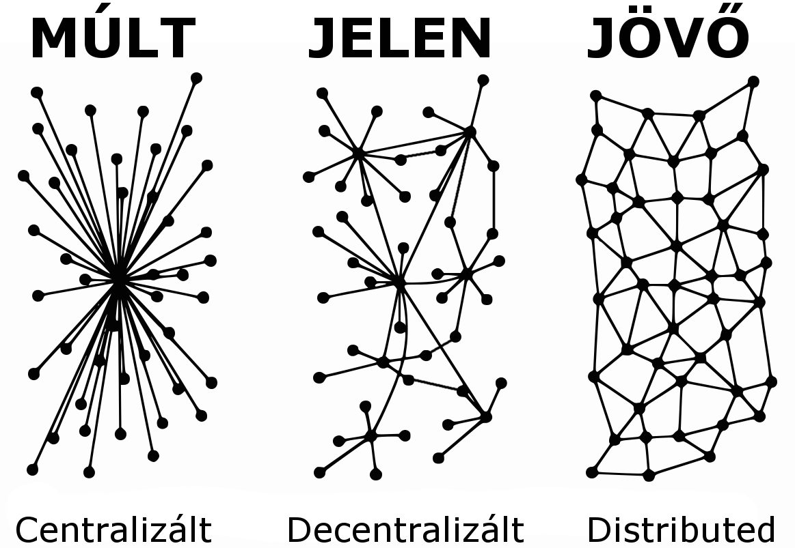

Kriptovaluta, a jövő pénze - Eszköz egy igazságos világ felé
A modern kor emberének 21. századi termékekre van szüksége. Igaz ez a technikai kütyükre, a közlekedési eszközök változatosságára, a lakóhelyünk, élőhelyünk tárgyaira.
De miért ne lehetne igaz akár a pénzünkre is.
A kriptovaluta fogalmával kapcsolatosan a legegyszerűbb magyarázat, ha arra gondolunk, hogy a kriptovaluta a többi valutához hasonló, csak éppen a digitális kor számára készült digitális készpénz.
Kriptovaluta - Úton egy igazságos világ felé
A kriptovalutával kapcsolatos legfontosabb pozitívum, hogy potenciálisan a leggyorsabb, legolcsóbb, legkönnyebb és legbiztonságosabb módja az értékek cseréjének.
Azaz világviszonylatban nézve egyenlő esélyeket teremt mindenki számára függetlenül attól, hogy ki hol lakik, amennyiben rendelkezik az illető okostelefonnal vagy bármilyen internethez kapcsolt eszközzel.
Ez különösen a világnak azon a részében fontos, ahol korlátozott a banki szolgáltatáshoz való hozzáférés.
A kriptopénznek köszönhetően a föld bármely két polgára küldhet vagy fogadhat egymás között pénzt bármilyen pénzügyi közvetítő intézmény nélkül vagy akár anélkül, hogy egyáltalán bankkártyával vagy bankszámlával rendelkezne.
Kriptovaluta – A múlt és jövő eszköze
Az alábbi táblázatban szemléltetjük a kriptovaluta hagyományos valutához való viszonyát:
| Kriptovaluta (Bitcoin, Ethereum stb.) | Hagyományos valuta | |
| Ki irányítja felügyeli? | Nyílt forráskódú szoftvert futtató számítógépek hálózata | A valutát kibocsátó állam. |
| Hogyan tartja az értékét? | Főként a kereslet és kínálat törvénye alapján. | Elsősorban a valutát kibocsátó kormányzatba vetett bizalom alapján. |
| Mi biztosítja a hátterét? | Számítógépek hálózata, amelyek minden egyes tranzakciót ellenőríznek. Bárki részt vehet a folyamatban, akinek internethozzáférése van. | Harmadik személyek, mint amilyenek a bankok vagy kormányok. Csak néhány kiválasztott intézmény vehet részt benne. |
| Van fizikai megvalósulási formája? (bankjegy, érme) | nincs | van |
| Vásárolhatok vele? | Igen, ahol a kereskedők elfogadják | Igen, de többnyire csak a valutát kibocsátó országban. |
Ezeken a nyilvánvaló előnyökön tovább mutat a blokkláncban, mint technológiában rejlő pozitívumok sora, amelyek alkalmazása a mindennapi gyakorlatban olyan területeket is érinthet, mint az oktatás, mezőgazdaság, egészségügy vagy akár a tudományos kutatások világa.
Kriptovaluták technikai meghatározása
A kriptovaluta technikai jellegű meghatározásánál viszont arra kell helyeznünk a hangsúlyt, hogy egy olyan digitális pénzről van szó, amely a kriptográfia eszközét használja a tranzakciók hitelesítésére.
Így az elsődleges funkciója, hogy a csere eszközeként működjön egy peer-to-peer (P2P) rendszerben, ami a kriptográfia segítségével előzi meg a visszaéléseket és hamisításokat.
A legtöbb kriptovalutára a decentralizáltság jellemző, amelyet számítógépek hálózata tart fenn.
A rendszer működésének alapeleme a decentralizált jelleg, így az egyszemélyes irányítása kizárt, legyen szó akár bankról, kormányról vagy bármilyen egyéb szervezetről és éppen ezért nincs is szükség a működéséhez és fennmaradásához semmilyen központi hatóságra.
A pénzügyi tranzakciók mindenféle közvetítő nélkül, a P2P kapcsolatban álló felhasználók között bonyolódnak.
A központosított gazdasági rendszerekkel ellentétben a kriptovaluta egységek kibocsátását és menedzselését egy olyan hálózati architektúra határozza meg, amely előre meghatározott algoritmusokon és titkosítási egységeken alapul.
Azaz egy előre meghatározott szabályrendszer (protokoll) határozza meg a rendszer működését.
A tranzakciókat az egymással kommunikáló számítógépek hálózata ellenőrzi és a tranzakció megerősítését követően rögzíti egy megosztott főkönyvben, amit blokkláncnak hívunk.
Ez a technológia az alapja minden kriptovalutának.
A kriptovaluta olyan digitális eszköz, mely csereeszközként vagy manapság fizetőeszközként is funkcionál.
Kriptográfiát (titkosítást) használ a tranzakciók biztonságossága érdekében.
A kriptovaluták a digitális valuták egy részhalmazát képviselik, de besorolhatók az alternatív valuták vagy a virtuális valuták csoportjába is.
A legtöbb kriptovaluta közös jellemzője a decentralizáció, azaz a központi felügyelet nélküli működés (hasonlóan az Internethez) melynek köszönhetően országhatárokon keresztüli fizetőeszközként lehet használni.
A Bitcoin a legelső és legismertebb kriptovaluta, 2009-ben került kibocsátásra egy Satoshi Nakamoto álnéven ismert ember által.
Azóta számos kriptovaluta jelent meg a piacon. Ezeket gyakran altcoinoknak is nevezik, a Bitcoin + alternatív szavak összekapcsolásának eredményeként.
A Bitcoin és alternatívái decentralizáltak a hagyományos, centralizált bankrendszerrel szemben.
A decentralizált ellenőrzés a blockchain használatához kapcsolódik, mely egy elosztott főkönyvi technológia.
Lényege, hogy az egymással kapcsolatban lévő emberek elektronikus pénzt tudnak fogadni és küldeni mindenféle központosítás nélkül.